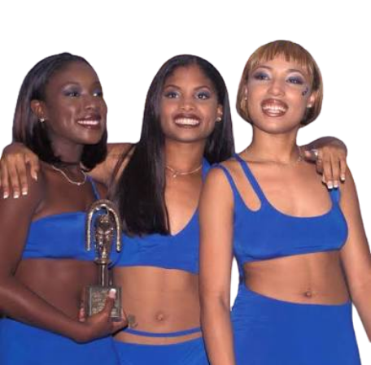
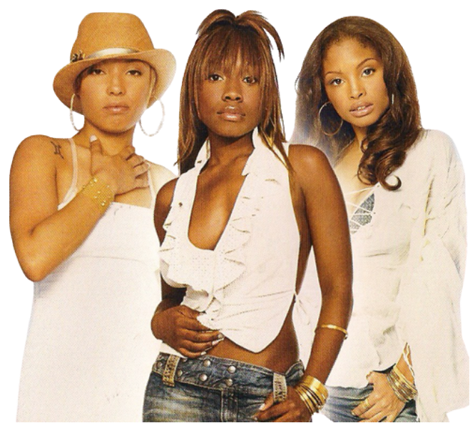
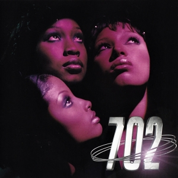

Irish Grinstead
Cantora do grupo 702
Integrante icônica do grupo de R&B dos anos 90, conhecida por suas harmonias vocais marcantes.
Deixou um legado inesquecível na música urbana mundial junto com suas irmãs e amigas.
Cantora do grupo 702
Integrante icônica do grupo de R&B dos anos 90, conhecida por suas harmonias vocais marcantes.
Deixou um legado inesquecível na música urbana mundial junto com suas irmãs e amigas.
Irish Beatrice Grinstead (1980–2023) foi uma cantora norte-americana de R&B, amplamente reconhecida como uma das membras fundadoras do aclamado grupo feminino 702. Nascida em Houston, Texas, no dia 2 de junho de 1980, e criada em Las Vegas, Nevada, sua voz e presença de palco ajudaram a moldar o som e a estética do R&B do final dos anos 1990 e início dos anos 2000
A jornada musical de Irish começou em família. Na infância e início da adolescência, ela cantava ao lado de sua irmã mais velha, LeMisha Grinstead, e de sua irmã gêmea fraterna, Orish Grinstead. Juntas com a amiga Amelia Cruz, elas formaram inicialmente um grupo chamado Sweeter than Sugar em 1993.
O grupo foi descoberto pelo comediante Sinbad e, mais tarde, pelo cantor e produtor Michael Bivins (do New Edition/Bell Biv DeVoe). Foi Bivins quem as rebatizou como 702, em homenagem ao código de área telefônico da cidade de Las Vegas. Pouco depois, Kameelah Williams juntou-se ao grupo, definindo a formação em trio mais famosa da banda (Irish, LeMisha e Kameelah)

Soul Train Lady of Soul Awards (1997): Venceram o prêmio de Best R&B/Soul Album by a Group, Band or Duo com o álbum de estreia No Doubt.

Soul Train Music Awards: Indicadas e reconhecidas no cenário internacional por grandes sucessos das paradas, como os hits "Steelo" e "Where My Girls At?".

Indicações ao American Music Awards: O sucesso contínuo de seus projetos rendeu indicações expressivas e a consolidação definitiva do grupo na história do R&B dos anos 90.